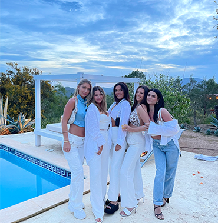

Welcome to The Abroad Diaries. My name is Carly Feller and I am a senior at Syracuse University. My junior year I studied abroad in Barcelona and I can say in all honestly it was the best experience of my life. It opened my eyes to a whole different part of the world, by getting to explore different countries, cities, and cultures.

I have always loved to travel with my family and friends, but I always wished I had a place to go and see recommendations from others while on my vacations So now, after my travels, I wanted to create a space for future study abroad kids, or anyone interested in traveling, to have direct insight to all the amazing places to see in Barcelona specifically.
Before studying abroad I had never traveled to Spain, which ended up being a big reason I picked it as my destination. During my time there, we fully immersed ourselves in the Spanish culture from the food and drinks, the fashion, the language, social aspects, and lifestyle overall. The Spanish people are not shy about their “lax” lifestyle and party culture, which is one of the most popular qualities the country possesses, but there is far more than just eating tapas and drinking Sangria. For any aspiring travelers looking to visit Spain, I have curated a list of the best clubs, restaurants, sight-seeing attractions, and activities to do during your time.